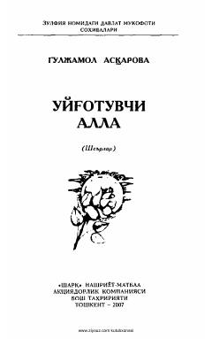

UAGuljamol Asqarovaning Vatan, sevgi va bolalik tuyg'ulariga yo'g'rilgan sara she'riy to'plami.
Ushbu to'plam shoira Guljamol Asqarovaning sevgi-muhabbat, ona-Vatan, beg'ubor bolalik va qishloq manzaralari tasvirlangan eng sara she'rlarini o'z ichiga oladi. Kitob muallifning "Hur o'lka qizlari" tanlovidagi g'olibligi munosabati bilan nashr etilgan bo'lib, kitobxonlarga ruhiy ozuqa berishni maqsad qiladi.